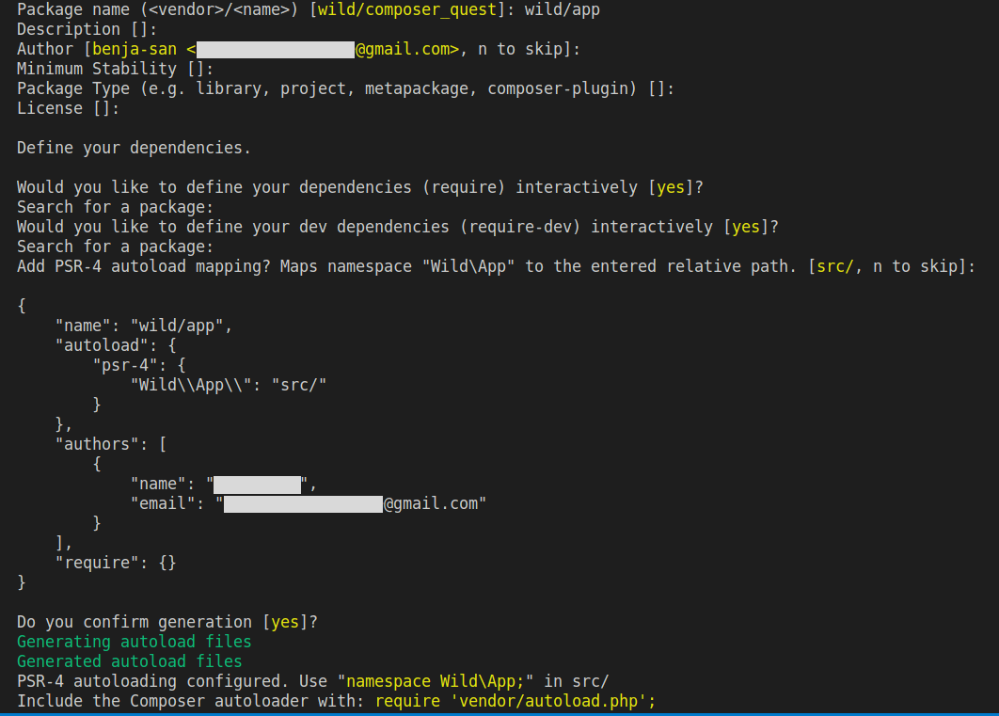

Composer - 2. PSR-4 & Autoload
Introduction

Pour rappel, composer est un gestionnaire de dépendances Libre, écrit en PHP. Il permet à ses utilisateurs de déclarer et d'installer les bibliothèques (packages) dont le projet principal a besoin. Une bibliothèque est un ensemble de scripts écrits en PHP mettant à disposition des fonctions, constantes et classes afin de faciliter et d'accélérer les développements.
Composer embarque également un système d’autoloading pour tes classes.

Cette quête va t’apprendre à charger automatiquement tes classes en utilisant l’autoload de Composer. Tu verras l'installation des packages dans la quête suivante.
🤓 À la fin de cette quête, tu seras capable de :
- ✅ Comprendre comment les classes sont chargées en PHP
- ✅ Utiliser l’autoloader de composer
Initialisation d'un projet Composer
Avant toute utilisation de Composer, il faut vérifier si tu utilises bien une version à jour. Pour cela, Composer te fournit une méthode pour se mettre à jour automatiquement.
TODO: Lance la commande suivante :
composer self-update
Afin d'initialiser un projet qui va utiliser Composer, place toi à la racine de ton projet et lance la commande :
composer init
Cette commande est interactive. Elle va donc te demander de renseigner des informations spécifiques à ton projet.
Attention, si un fichier composer.json est déjà présent dans ton projet, cette commande va l'écraser et le remplacer avec le fichier composer.json nouvellement initialisé.

Une fois que tu as répondu à toutes les questions, Composer te crée un fichier très important : composer.json
Ce fichier contient toutes les informations relatives à ton projet que tu as renseignées dans ton terminal. Il contiendra également la liste des dépendances à gérer.
Voici le contenu de ce fichier :
{
"name": "wild/app",
"description": "Wild composer quest",
"autoload": {
"psr-4": {
"App\\": "src/"
},
"authors": [
{
"name": "wilderName",
"email": "wilder@email.com"
}
],
"require": {}
}
Chargement des classes (Autoloading)
Maintenant que tu as vu la POO (Programmation Orienté Objet), tu veux utiliser des objets !
Dans certains cas, il arrive que différentes classes, fonctions ou constantes portent le même nom (d'une bibliothèque à une autre par exemple). Afin d'éviter tout conflit PHP met à disposition des espaces de noms: les namespaces.
Il s'agit de "dossiers virtuels" qui permettent de faire la distinction entre une Class Cat importée d'une bibliothèque externe et une Class Cat définie dans ton projet par exemple.Ainsi, si ta classe Cat se trouve dans le Namespace Animal, le vrai nom complet de la classe sera Animal\Cat et non pas Cat (ce qui permet bien de différencier deux classes portant le même nom mais dans des namespace différents). Ce nom, composé du namespace associé au nom de la classe est appelé nom pleinement qualifié de la classe ou Fully Qualified Class Name (FQCN) en anglais.
Pour utiliser les classes dans ton projet tu vas devoir importer un à un les fichiers .php qui les contiennent (avec include ou require).
À mesure que le nombre de fichiers grandit, cela devient vite ingérable ! C'est pour cela que PHP propose un système d'autoloading.
Même si, en théorie, tu peux créer plusieurs classes dans un même fichier, c'est une très mauvaise pratique. Si tu souhaites utiliser l'autoload, tu vas devoir faire attention de toujours créer une seule classe par fichier, et t'assurer que le fichier PHP ait bien le même nom que la classe. Soit pour "Animal/Cat", un fichier Cat.php, pour "Animal/Dog", un fichier "Dog.php", etc.
Tu ne vas pas l'utiliser directement, car le paramétrage peut devenir fastidieux. Tu vas donc utiliser le système d'autoloading de Composer.
Résultat: Composer va se charger d'importer automatiquement tous les fichiers PHP de ton projet et de les rassembler sous un seul namespace racine que tu auras défini dans ton fichier composer.json.
Lors de la dernière phase d'initialisation de ta commande composer init L'invite de commande te propose automatiquement de bénéficier de l'autoloading en intégrant une entrée autoload: à l'interieur de ton fichier composer.json.
Pour en savoir plus, jette un oeil à la documentation Composer autoloading.
Important: Si jamais tu viens à changer les informations de ton fichier composer.json, sache qu'après toute modification du fichier il est nécessaire de lancer la commande composer install pour que les changements soient pris en compte.
Si tu as décidé de générer l'autoload de manière automatique, tu pourras accèder au dossier vendor/. Dans ce dossier, un fichier autoload.php est généré. C'est lui qui va se charger d'importer tes classes, etc. Il est nécessaire de require le fichier autoload.php dans ton index.php, pour pouvoir utiliser les namespaces.
Si tu modifies l’autoload dans ton composer.json après l’installation, il faudra jouer la commande composer dump-autoload pour que les changements soient pris en compte.
Les namespaces en PHP.
Composer autoloading.
Vidéo sur l'autoloading.
La doc officielle de PHP sur l'autoloading.
PSR-4 : Autoloader.
true|||true|||true
# Quelle commande permet de générer un fichier composer.json ?
[x] composer init
[] composer install
[] composer update
# Si vous venez de récupérer un projet et que vous constatez qu’il comporte un fichier composer.json mais pas de vendor, que devez vous faire ?
[] télécharger le vendor sur packagist
[x] taper la commande composer install
[] créer un dossier vendor dans le projet
# Qu’est ce que le FQCN ?
[] Le chemin exacte dans le répertoire vers la classe, par exemple : src/controller/HomeController
[x] Le nom composé du namespace et du nom de la classe, par exemple App\Controller\HomeController
[] Le nom composé du namespace et du nom de la classe, par exemple App/Controller/HomeController
# Il est possible d'avoir deux classes ayant exactement le même nom dans un même projet
[x] vrai
[] faux
# Dans quel ordre faudrait-il exécuter ces commandes pour créer un nouveau projet utilisant Composer ?
[] composer init / composer install / composer self-update
[] composer install / composer init / composer self-update
[x] composer self-update / composer init / composer install
💪 Challenge
Créer une architecture de projet
Tu dois créer une architecture minimaliste de projet.
L'arborescence des dossiers doit être la suivante :
public/
index.php
src/
Hello.php
- le fichier index.php est l'entrée de l'application.
- le fichier Hello.php contient une classe nommée
Helloqui devra posséder une méthodetalk. Cette dernière devra retourner "Hello World !". - le vendor n'est pas versionné (ne le
addpas avec git ou ajoute le dans le.gitignore)
Attention, cette classe doit se trouver dans le namespace App !
Critères de validation
- Ton code est sur un repository personnel sur GitHub.
- Ton arborescence correspond à ce qui a été demandé dans le challenge
- Ton composer.json contient une section
autoloadavec la déclaration de ton namespace racineApp\ - Ton fichier index.php instancie et utilise un objet
App\Hello
Ressources partagées sur cette quête
- Explication plus claire sur comment rajouter le code relatif à l'autoload dans le fichier composer.jsonhttps://coopernet.fr/formation/php/autoload
- le lien vers la vidéo de Grafikart ne fonctionne pas, mais j'ai trouvé cette vidéo du même auteur sur le même sujet qui serait potentiellement la bonne. De surcroît très instructive.https://grafikart.fr/tutoriels/autoloader-composer-php-1144
- explicite !https://www.youtube.com/watch?v=exaTOIhzYdk
- En complément à la vidéo de Grafikart, je l'ai trouvé plus pertinente, notamment pour définir le chemin de APP\\https://youtu.be/NLXtGZ6Ilsw?t=600